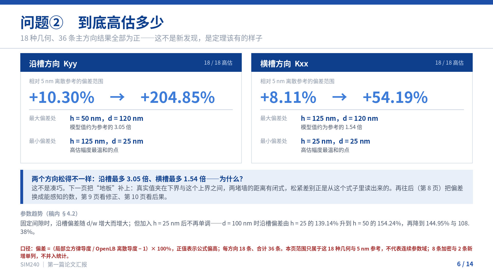
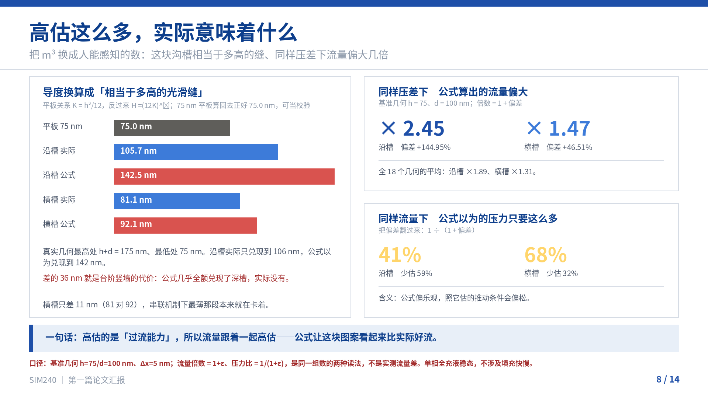
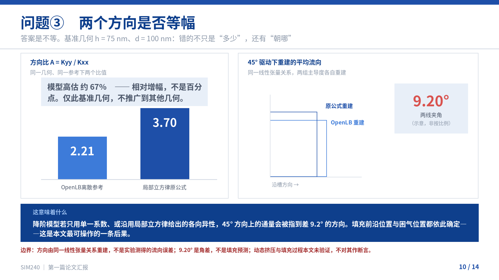

论文汇报 · 全文 14 页 · 一个可以证明的必然性：局部立方律为什么一定高估，以及它到底松了多少
一个可以证明的必然性：局部立方律为什么一定高估，以及它到底松了多少
封面用「证明口吻」而不是「测量口吻」，是为了跟第 4 页的定理页对上——先立一个能证明的命题，再谈量出来多少。
固定、全充液矩形沟槽中，局部立方律对两个方向导度的描述准不准
固定、全充液矩形沟槽中，局部立方律对沿槽与横槽导度的描述与显式 OpenLB 计算相差多少；本研究标定的经验修正 V2 能改善多少？
底部只埋伏笔、不提前给结论，是为了避免后面「先给答案再解释」的倒叙。
只有两步：先从两块平行平板算出 h³/12，再把深浅两区按两种方式拼起来
液体被压着向前流，速度呈抛物线：中间快，贴壁为零。
「局部」两个字的含义：每一处高度都当成一块独立平板，再按并联或串联拼起来。拼法本身没错——错在拼的时候，台阶和竖墙这些界面被抹掉了。
理想连续 Stokes 模型里，局部立方律给出上界、h³/12 给出下界；只有无槽平板（d = 0）时三者合一
局部模型的假设：每一处高度都是一对独立平行平板——自由流动，无侧壁。
真实几何：液体还要绕过台阶、贴着竖壁走。红标处 = 竖壁与台阶，平行平板模型里不存在这些界面。
多出来的界面带来额外黏性剪切与台阶处的速度重分布；真实流动因此多耗散一部分能量，同样压差只能给出更小的通量。
h³/12 ≤ Kyy ≤ KyyLCL h³/12 ≤ Kxx ≤ KxxLCL d = 0 时三者合一
边界：定理针对理想连续 Stokes 问题，不保证 5 nm 离散解的误差，也不给出偏差幅度、方向比偏差的符号或 V2 的准确度。它解释「为什么偏」，不解释「偏多少」。
定理说方向、不给幅度——所以必须把同一几何的真实流动算出来，再逐点对比
18 种几何 · 36 条主方向结果（5 nm） → +8 条（2.5 nm 加密，4 种几何） → +2 条（新增间隙 h = 100 nm） → 19 种几何 · 46 条比较记录
46 条比较记录 ≠ 46 种几何 ≠ 46 次独立验证。主比较统计的分母仍是 36 条；8 条加密与 2 条新增单独报告。
18 种几何、36 条主方向结果全部为正——这不是新发现，是定理该有的样子

相对 5 nm 离散参考的偏差范围：+10.30% → +204.85%
相对 5 nm 离散参考的偏差范围：+8.11% → +54.19%
固定间隙时，沿槽偏差随 d/w 增大而增大；但加入 h = 25 nm 后不再单调——d = 100 nm 时沿槽偏差由 h = 25 的 139.14% 升到 h = 50 的 154.24%，再降到 144.95% 与 108.38%。
口径：偏差 =（局部立方律导度 / OpenLB 离散导度 − 1）× 100%，正值表示公式偏高；每方向 18 条、合计 36 条。本页范围只属于这 18 种几何与 5 nm 参考，不代表连续参数域；8 条加密与 2 条新增单列，不并入统计。
上界是天花板（原公式）；把槽腔封死、只留 h 厚贯通层，就得到地板 h³/12。两堵墙之间才是真实值
区间能说什么：它不含槽宽 w，所以解释不了宽度依赖；横槽区间窄（≤2 倍）也不等于预测准——横槽实测仍有 +54.19% 的高估。区间是理论约束与比较基线，不是点预测。本页由式（3）与 h³/12 直接化简，未新增计算。
把 m³ 换成人能感知的数：这块沟槽相当于多高的缝、同样压差下流量偏大几倍

平板关系 K = h³/12，反过来 H = (12K)⅓；75 nm 平板算回去正好 75.0 nm，可当校验。
真实几何最高处 h+d = 175 nm、最低处 75 nm。沿槽实际只兑现到 106 nm，公式以为兑现到 142 nm。
差的 36 nm 就是台阶竖墙的代价：公式几乎全额兑现了深槽，实际没有。横槽只差 11 nm（81 对 92），串联机制下最薄那段本来就在卡着。
基准几何 h = 75、d = 100 nm；倍数 = 1 + 偏差。
把偏差翻过来：1 ÷（1 + 偏差）
含义：公式偏乐观，照它估的推动条件会偏松。
一句话：高估的是「过流能力」，所以流量跟着一起高估——公式让这块图案看起来比实际好流。
口径：基准几何 h=75/d=100 nm、Δx=5 nm；流量倍数 = 1+ε、压力比 = 1/(1+ε)，是同一组数的两种读法，不是实测流量差。单相全充液稳态，不涉及填充快慢。
答案是能压下来——沿槽均值从 88.85% 降到 6.40%，但最坏点仍在 10.50% / 18.71%
但注意选点：h ≥ 50 nm 子集的横槽最大偏差只有 6.92%（15 点），全 18 点是 18.71%。6.92% 不能当成适用范围承诺。
F 只含 d/w、不含 h，而残差随 h 变化。是模型缺项、参数估计，还是参考误差？现有记录分不开其中任何一项。
另有硬约束：9 个标定几何与 9 个扩展几何恰好对应两组不同构建程序，构建差异与几何效应完全重合，无法分离。扩展数据在选型时已可见，残差只能作回顾性描述，不构成独立预测精度。
下一页：修正只能压低「多少」，压不回「朝哪」——两方向不等幅的后果，才是更难修的。
答案是不等。基准几何 h = 75 nm、d = 100 nm：错的不只是「多少」，还有「朝哪」

OpenLB 离散参考 2.21 局部立方律原公式 3.70
模型高估约 67%——相对增幅，不是百分点。仅此基准几何，不推广到其他几何。
原公式重建与 OpenLB 重建两条线夹角 9.20°（示意，非按比例）。
降阶模型若只用单一系数、或沿用局部立方律给出的各向异性，45° 方向上的通量会被指到差 9.2° 的方向。填充前沿位置与困气位置都依此确定——这是本文最可操作的一条后果。
边界：方向由同一线性张量关系重建，不是实验测得的流向误差；9.20° 是角差，不是填充预测；动态挤压与填充过程本文未验证，不对其作断言。
三个问题答完，连同立论与两条补充对照，收成六条
固定周期与槽宽的全充液矩形沟槽中，评价局部立方律的双向偏差、各向异性后果与本研究标定的 V2 修正的表现。
→ 不是首创，是这一族几何上的配套定量评价。
36 条 5 nm 主方向结果全部高估：沿槽 +10.30% 至 +204.85%，横槽 +8.11% 至 +54.19%（Δx = 5 nm）。
→ 方向由附录 E 定理保证；幅度是这 18 种几何的实测范围。
h=75、d=100 时，OpenLB 比 2.21、原公式 3.70，相对高估约 67%；45° 驱动流向差 9.20°。
→ 67% 是相对增幅、仅此基准几何；两个主值与比值都须检查。
35/36 条改善；沿槽平均绝对偏差 88.85%→6.40%，横槽 30.63%→4.42%；最坏 10.50% / 18.71%。
→ 回顾性比较，非独立预测；h=25、d=100 横槽的改善判断随参考网格改变。
补算 h=100 nm（不在原标定集，沿用本研究标定的 V2 系数、未重拟合），数值按沿槽/横槽排：原公式 +126.62%/+49.43%，V2 −2.03%/+4.39%；方向比 A 偏差 −6.15%；静态接入后出口流量降 56.77%/30.14%。
→ 称「新增间隙固定公式对照」、不称盲测；程序间一致 ≠ 导度准确；不是动态挤压、载荷或填充时间的证据。
理想连续模型中 h³/12 ≤ K ≤ 原公式，仅 d=0 三者合一；46 条记录（36＋8＋2）均落在界内。两宽度组的梯度诊断给出方向性结构。
→ 上界只对连续模型；机制诊断限于指定基线、分解与几何；46 条不是 46 次独立验证。
本页为 2026-11-09 晚由五条补为六条：新增第五条（原 PPT 无对应），原「理论上界」并入第六条。
不是结果不可信，而是把可说的范围划清楚
最薄间隙 h=25 nm 在该网格下 h/Δx = 5（壁面半格插值）。加密到 2.5 nm 后，沿槽变 −0.386%、横槽变 −4.431%；0.625 nm 的核查因内存限制未完成。连续解误差至今未定。
→ 所以说的是「相对 5 nm 参考的偏差」，不是「真实误差」。
9 个标定几何与 9 个扩展几何恰好对应两组不同构建程序；扩展数据在选型时已可见。
→ V2 的精度主张只到「在标定几何族内回顾性残差」，不构成盲测。
h=30 nm、d=80 nm 的薄隙网格加密控制残差 1.328%，超过 1% 门槛。
→ 历史 FAIL 原样保留，不改写为 PASS；它与主地图的 h=25、d=100 是两个几何。
w 恒为 120 nm，d/w 只能取 0.208 / 0.417 / 0.625 / 0.833 / 1.000，与 d 严格同步。
→ V2 的 F(d/w) 在本文数据里与「任何只含 d 的函数」不可区分；w 的作用从未被检验。
下一页：边界说的是「不能说」，还有一类是「还不知道」——三类分开列，才知道下一步往哪走。
三类分法：能答但受噪声限 / 设计上分不开 / 必须新算
汇报口径：甲类说「知道，但受噪声限」；乙类说「设计上分不开，已如实声明」；丙类说「这就是下一步」。三类都不辩解，只陈述事实。
等效缝高把导度翻译成厚度——但它只能翻译已有结果，不能新增结果
一句话红线：H 只能「翻译」已有结果，不能「新增」结果。
基准几何 h=75 / d=100：沿槽 105.67 nm（2.80×） 横槽 81.12 nm（1.27×）